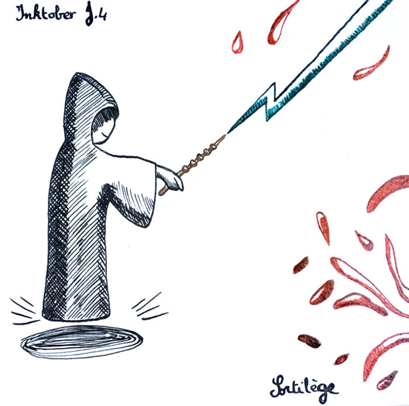

Inktober 2018 - J.4 : Sortilèges
En anglais, le thème du jour est spell. Ce mot possède beaucoup de traductions. J’ai préféré m’orienter vers la sorcellerie pour pouvoir faire un clin d’oeil (ou plusieurs) à Harry Potter. La baguette de sureau, bien sûr, mais aussi la couleur du sortilège de la Mort, le fait que le sorcier n’ait pas de nez (Voldemort) et la forme du sortilège qui rappelle la cicatrice de Harry.
Bon, normalement le sortilège de la Mort est plutôt propre. Les éclaboussures de sang (ou autre selon l’imagination) sont surtout là pour compléter la partie inférieure droite de la feuille.
Nouvel essai à la plume et à l’encre. L’encre de Chine, noire, est plus facile à utiliser que les couleurs. C’est sûrement dû à leur composition. Là où l’encre de Chine est fluide, mais épaisse, les encres de couleurs sont plus liquides et glissantes. Un peu comme le brou de noix, mais en moins gras. Bref, encore du travail en perspective.
